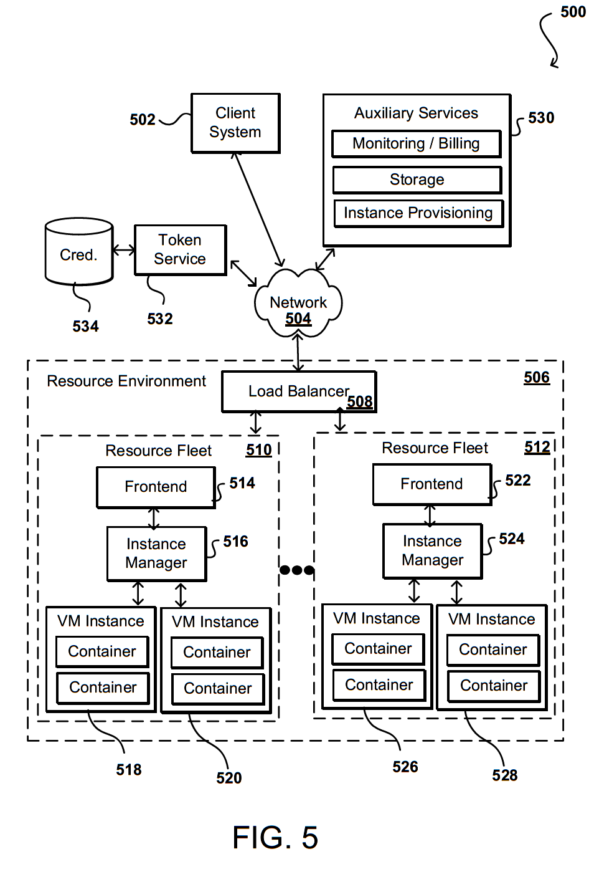

Example computing device providing access to an electronic marketplace
FIG. __ illustrates an example computing device providing access to an electronic marketplace, in accordance with various embodiments.FIG. __ illustrates an example __ computing device __ providing access to an electronic marketplace __, in accordance with various embodiments. In this example, a computing device __ provides access to an electronic marketplace __, in accordance with various embodiments. Although a tablet computing device is shown in this example, it should be understood that various other types of electronic devices that are capable of determining and processing input and providing output can be used in accordance with various embodiments discussed herein. These devices can include, for example, smart phones, e-book readers, desktop computers, notebook computers, personal data assistants, video gaming consoles or controllers, smart televisions, and portable media players, wearable computers (e.g., glasses, watches, etc.) among others. Further, the elements illustrated can be part of a single device, while at least some elements illustrated and otherwise utilized for such a device can be provided as one or more peripheral devices or accessories within the scope of the various embodiments. As illustrated, the electronic marketplace __ provides a plurality of items __ available for consumption (e.g., purchase, rent, use, stream). in some embodiments, various descriptors __ of an item are provided, such as images, price, name, among others.
An example computing device providing access to an electronic marketplace
FIG. __ illustrates an example scenario of a user utilizing a computing device, in accordance with various embodiments.FIG. __ illustrates an example scenario __ of a user __ utilizing a computing device __, in accordance with various embodiments. In this example, a user __ may use a computing device __ to access content __. The computing device __ may be used to render or access a graphical interface __ of a Web platform such as a website or application. The graphical interface __ may include content __ such as text, image content, and other various static or interactive content.
An example computing device providing access to an electronic marketplace
FIG. __ illustrates an example of a networked computing system that can be improved using the systems and techniques of the present disclosure.FIG. __ illustrates an example of a networked computing system __ for [--INSERT APPLICATION--] that can be improved using the systems and techniques of the present disclosure. In this example, a server __, such as at a resource, service, or content provider can transmit video data to one or more client devices __, __, __. Client devices __, __, __ include devices through which a user can watch, listen to, read, or otherwise interact with content, and include at least one form of input such as a keyboard or controller, and at least one form of output such as a display or speaker. The client devices __, __, __ can include various computing devices such as smart phones, tablet computers, wearable computers (e.g., smart glasses or watches), desktop or notebook computers, and the like. The client devices __, __, __ can communicate with the server __ over at least one network __, such as the Internet, a cellular network, a local area network (LAN), an Ethernet, Wi-Fi, or a dedicated network, among other such options, such that the client devices __, __, __ can communicate with the server __.
An example computing device providing access to an electronic marketplace
FIG. __ illustrates an example situationin which a computing device can display content to a user via an interface on a display screen.FIG. __ illustrates an example situation __ in which a computing device __ might display content to a user via an interface on a display screen __ per conventional approaches. Although a portable computing device (e.g., a smart phone, an electronic book reader, or tablet computer) is shown, it should be understood that any device capable of receiving and processing input can be used in accordance with various embodiments discussed herein. The devices can include, for example, desktop computers, notebook computers, electronic book readers, personal data assistants, cellular phones, video gaming consoles or controllers, wearable computers (e.g., smart watches or glasses), television set top boxes, and portable media players, among others.
An example computing device providing access to an electronic marketplace
FIG. __ illustrates an example computing system for [[_PURPOSE OF APP_]], in accordance with various embodiments of the present disclosure.FIG. __ illustrates an example computing system __ for [[_PURPOSE OF APP_]], in accordance with various embodiments of the present disclosure. In various embodiments, a system __ may enable a client device __ to receive _______ from [[_SYSTEM_]] __. The device client __ may access a content provider __, such as a _____ service or other web platform or service providing _____, to request ______. In some embodiments, the adaptive video compression system __ may be implemented at one or more servers at _____. The _____ may utilizes the [[_SYSTEM_]] __ to _____. In some other embodiments, the [[_SYSTEM_]] __ may be implemented remote from the content provider __, such that the content provider __ provides data to the [[_SYSTEM_]], the [[_SYSTEM_]] _____ and either transmits the _____ back to the content provider __ or directly to the client device __. The client device __ may represent a client-side computer device that includes any type of computing devices having network connectivity, including personal computers, tablet computers, smart phones, notebook computers, and the like. Multiple client devices __ may be connected to the [[_SYSTEM_]] __ via the network __, and the [[_SYSTEM_]] __ may provide individualized service to each client device __, such as based on the type of client device. In some embodiments, the client device __ may be a virtual device, Web program, or software application that can communicate with the [[_SYSTEM_]] __ directly or over the network __, making and receiving requests and calls, and sending and receiving data. The network __ can include any appropriate network, such as the Internet, a local area network (LAN), a cellular network, an Ethernet, Wi-Fi, Bluetooth, radiofrequency, or other such wired and/or wireless network. The adaptive video compression system __ can include any appropriate resources for performing the various functions described herein, and may include various servers, data stores, and other such components known or used for providing content from across a network (or from the cloud). In various embodiments, the [[_SYSTEM_]] __ may include functional and data aspects illustrated herein as an interface __, a _____ module __, a _____ module __, a _____ module __, a _____ database __, an _____ module __, an _____ database __, and a _____ module __. One or more of the modules and databases described above may be implemented jointly or separated further into additional modules. For example, the interface face __ can facilitate communication between the client device __ and the [[_SYSTEM_]] __. Requests received by the [[_SYSTEM_]] __ can be received by the interface __. Example requests may include _____, among others. The interface __ may also provide outputs from the [[_SYSTEM_]] __ to the client __, such as _____. The [[_SYSTEM_]] __ may receive _____ from the content provider 202 via the interface __. The interface __ may also include components such as specific application programming interfaces (APIs), load balancers, request and/or data routers, and the like. The interface __ may also facilitate communication with the content provider __, whether local or remote.
Content Management and Recommendation Diagram
FIG. __ illustrates an example content management system in accordance with various embodiments.FIG. __ illustrates an example content management system __ in accordance with various embodiments. A content management system __ associated with an entity __ such a service provider can include content server __, a content selection module __, and a model trainer module __. In some embodiments, content selection module __ may include multiple content selectors __ configured to select content for particular trained modules. It should be noted that the trained models may be stored in a models database __ and may include machine learning models such as trained neural networks and/or classifiers of such neural networks. Additional or alternative components and elements can be used in such a system in accordance with the various embodiments. Accordingly, it should be noted that additional services, providers, and/or components can be included in such a system, and although some of the services, providers, components, etc. are illustrated as being separate entities and/or components, the illustrated arrangement is provided as an example arrangement and other arrangements as known to one skilled in the art are contemplated by the embodiments described herein. The content management system __ may also include various data stores to store data and/or files in connection with customized content generation. For example, the content management system may include a user data store __ to store data about _____. In some embodiments, a model may be generated for each content type that may be served by content management system __. For example, a first model may correspond to _____, a second model may correspond to _____, a third model may correspond to _____, and so forth. In an example embodiment, the model may be a single model that corresponds to multiple or all product types. The content management system may also include a training data store __ to store data for use in training a model, such as machine learning models, a neural network, classifiers, etc. In various embodiments, each piece of training data includes _____. The content management system may also include a content data store __ to store a corpus of content (or information about the content) available to be distributed to user devices __. The data stores and other components of the content management system and described herein are illustrative only, and are not intended to be limiting. In some embodiments, fewer, additional, and/or alternative data stores and/or components may be implemented by a content management system. The content management system __ may be implemented on one or more physical server computing devices that provide computing services and resources to users. In some embodiments, the content management system (or individual components thereof, such as the content server __, model trainer module __, etc.) may be implemented on one or more host devices, such as blade servers, midrange computing devices, mainframe computers, desktop computers, or any other computing device configured to provide computing services and resources. For example, a single host device may execute one or more content servers, one or more group generators, various data stores, some combination thereof, etc. The content management system may include any number of such hosts. In some embodiments, the features and services provided by the content management system __ may be implemented as web services consumable via a communication network. In further embodiments, the content management system (or individual components thereof) is provided by one more virtual machines implemented in a hosted computing environment. The hosted computing environment may include one or more rapidly provisioned and released computing resources, such as computing devices, networking devices, and/or storage devices. A hosted computing environment may also be referred to as a cloud computing environment. Individual user devices __ may be any of a wide variety of computing devices, including personal computing devices, terminal computing devices, laptop computing devices, tablet computing devices, electronic reader devices, wearable computing devices, mobile devices (e.g., smart phones, media players, handheld gaming devices, etc.), and various other electronic devices and appliances. A user may operate a user device __to access and interact with content managed by the content management system __. In some embodiments, a user may launch specialized application software, such as a mobile application __ executing on a particular user device, such as a smart phone or tablet computer. The application __ may be specifically designed to interface with the content management system for accessing and interacting with content. In some embodiments, a user may use other application software, such as a browser application, to interact with the content management system. In this example, a computing device can search for content from the service provider via a communication network. For example, the computing device can request content such as text, documents, audio recordings, video, images, animations, and the like. The content request can be received at content server __. The request can be received at, for example, a network interface layer __. The network interface layer can include any appropriate components known or used to receive requests from across a network, such as may include one or more application programming interfaces (APIs) or other such interfaces for receiving such requests. The network interface layer __ might be owned and operated by the service provider, or leveraged by the service provider as part of a shared resource or serverless cloud offering. The network interface layer can receive and analyze the requests from the computing device, and cause at least a portion of the information in the requests to be directed to an appropriate system or service of the content management system. In various embodiments, when a user accesses application __ on a computing device __to request content, such as to _____, the computing device __may establish a connection with the content management system __. The computing device __may receive content from a content server __ of the content management system via the connection. The content may include network resources such as Web pages, content posts, documents, images, videos, and the like. Illustratively, the content may be received as an individual piece of content (an individual Web page), as a set of results, or in some other format. A user of the computing device __can interact with the content by activating links to other content, submitting search queries, initiating the purchase of items referenced in the content, etc. Information regarding user interactions with the content can be transmitted to the content management system for processing by content server __. In addition, information regarding the interactions, or some subset thereof, may be stored for use in training and/or adjusting any appropriate machine learning approaches. For example, information regarding interactions may be stored in the training data store __.
An example computing device providing access to an electronic marketplace
FIG. ___ illustrates an example environment in which aspects of the various embodiments can be implemented.FIG. ___ illustrates an example environment ___ in which aspects of the various embodiments can be implemented. Specifically, the example environment ___ includes a recommendation engine that can recommend _____. In this example, a computing device ___ is able to make a call or request across one or more networks ___ to a content provider environment ___. The network(s) can include any appropriate network, such as the Internet, a local area network (LAN), a cellular network, an Ethernet, or other such wired and/or wireless network. The content provider environment ___ can include any appropriate resources for providing content from a resource provider, as may include various servers, data stores, and other such components known or used for providing content from across a network (or from the "cloud"). In this example, a request received to the content provider environment ___ can be received by an interface layer ___ of the environment. As known for network environments, the interface layer can include components such as interfaces (e.g., APIs), load balancers, request and/or data routers, and the like. If the request is a request for content, such as for content for a page to be displayed in an application, information for the request can be directed to one or more content managers ___ and/or content servers, which can obtain the content from a content data store ___ or other such repository to be sent back across the network(s) to the computing device. In some embodiments, information for the request might also be compared against user data in a user data store ___ or other such location do determine, for example, whether the user has access rights to that content. In some embodiments user data might also be analyzed to determine which type of content to provide additional supplemental content to provide with the primary content, and the like. In various embodiments, _____ recommendations may be determined by a recommendation engine ___ and provider by the content server ___ based upon data stored in the data repository ___ or determined using a query component ___ or model component ___, among other such options. In some embodiments the recommendation engine ___ may access a weighting component ___ or other such mechanism to weigh the data, such as various components of training data, in determining the _____ recommendations. In various embodiments, determining the _____ recommendation may include ranking _____, in which all or a subset of the plurality of _____ are assigned a match score indicating how well matched (i.e., strongly associated) the respective ____ is with respect to _____. A recommended ____ may be a ____ whose match score is higher than a threshold score or ranked within a certain number of positions. The individual match scores or the recommended _____ can be determined at least in part using neural networks ___ such as a CNN through training on an appropriate data set. The training component ___ can perform the training on the models and provide the resulting results and/or trained models for use in determining the individual match scores or the recommended products. The training component ___ can be the same system or service that is used to train a localizer, as well as various face detectors or other models, networks, or algorithms discussed or suggested herein. In the example shown in FIG. 5, a neural network ___ such as a convolutional neural network (CNN) can be trained using, for example, _____. As mentioned, for CNN-based approaches there can be pairs of [[images]] submitted that are classified by a type of attribute (e.g., an association with a certain product), while for GAN-based approaches a series of [[images]] may be submitted for training that may include metadata or other information useful in classifying one or more aspects of each [[image]]. For example, a CNN may be trained to perform [[object recognition]] using [[images of different types of objects]], and then learn how the attributes relate to those [[objects]] using the provided training data. In certain embodiments, training a neural network may involve significant use of computation resources and time, such that this may correspond to a preparatory step to servicing search requests and/or performed relatively infrequently with respect to search request servicing and/or according to a schedule. According to some embodiments, training data and respective can be located in a data store ___. A training component ___ can utilize the training data set to train the neural network ___. As further described, neural networks can include several learning layers in their architecture. A query image from the training data set is analyzed using the neural network to extract a feature vector from the network before the classification layer. This feature vector describes the content of the training data. This process can be implemented for each piece of training data in the data set, and the resulting object feature vectors can be stored in a data store. In various embodiments, the resulting object feature vectors can be compressed for improved processing. For example, the object feature vectors generated by the neural network may include object feature vectors that have a large number of dimensions. The dimensions of these object feature vectors can be reduced by applying at least one of Principal Component Analysis (PCA) or Multi-Dimensional Scaling (MDS). Advantageously, such an approach can reduce storage demands and significantly improve latency performance. Additionally, such an approach can remove or at least reduce noise in the transformed space since the tailing dimensions generally correspond to noise and discarding them helps to focus on the useful signal when measuring similarities. The initial query image in some embodiments may be received from client device ___ over network ___ and processed by query component ___. In some embodiments, the [[query image]] can be received when a selection of an image from a third party provider ___ or content provider environment ___ is selected, such as through the selection of a content item. When a query image is received, for example, a set of query object descriptors may be obtained or determined for the query image. For example, if the query image is not part of an electronic catalog and does not already have associated feature descriptors, the system may generate feature descriptors (both local feature descriptors and object feature descriptors) for the query content in a same and/or similar manner that the feature descriptors are generated for the collection of images, as described. Also, for example, if the query image is part of the collection then the feature descriptors for the query image may be obtained from the appropriate data store. Additionally, the query image can be analyzed to determine local feature descriptors for the query image. Using the clustered feature vectors and corresponding visual words determined for the training images, a histogram for the query image can be determined. The query image can also be analyzed using the neural network ___ to extract a feature vector from the network before the classification layer. This feature vector describes the subject and/or objects shown in the image. Using the local feature descriptors and object feature descriptors, visually similar images (i.e., image data representing facial features of various other uses) and their values of associations with one or more products in content provider environment ___ can be identified.
An example computing device providing access to an electronic marketplace
FIG. __ illustrates an example machine learning analysis pipeline that can be utilized in accordance with various embodiments.FIG. __ illustrates an example machine learning analysis pipeline __ that can be utilized in accordance with various embodiments. In this example, training data __ is obtained that can be used to train one or more neural networks __ to _______. The training data may include _______. Specifically, for example, _______. In this example, the training data is accessible to a training module __ which can feed the training data to a neural network __ in order to train the network. Specifically, the _______ will be fed to the neural network __ so the neural network can determine relationships between _______. Given a large number of such example relationships, the neural network __ can estimate how _______. Thus, when query _______ are processed with the trained neural network __, the network can analyze the queried _______ to predict _______, although various other approaches can be utilized as well within the scope of the various embodiments. In some embodiments, once at least the initial training has completed, a testing module __ can utilize testing data __ to test the trained neural network and determine if the network is adequately trained or has achieved an acceptable level of accuracy. The testing data __ may be similar to the training data and include _______. Specifically, _______. The _______ are inputs to the testing module __ and fed into the neural network. The neural network may output one or more _______. The expected output may be known, and thus the output of the neural network may be compared to the expected output to gauge the accuracy of the neural network for this use instance. If the accuracy is acceptable, or if the average accuracy over a plurality of tests is acceptable, the neural network may be deployed and used. In some embodiments, the testing phase may be omitted. During use, query data __ such _______ may be accessed by the analyzer __ and fed through the neural network to produce _______ __. In some embodiments, an expected value of the optimization parameter is determined and the analyzer __ may _______, in order to determine _______ __. The neural network __ may include several learning layers in its architecture. For example, the neural network __ may include a feature extraction layer. Training data may be analyzed in the feature extraction layer to extract a feature vector from the network before the classification layer. This feature vector essentially describes the training data. This process can be implemented for each piece of training data, and the resulting content feature vectors can be stored in a training database. In various embodiments, the resulting content feature vectors can be compressed for improved processing. For example, the content feature vectors generated by the neural network __ may include content feature vectors that have a large number of dimensions. The dimensions of these object feature vectors can be reduced by applying at least one of Principal Component Analysis (PCA) or Multi-Dimensional Scaling (MDS). Advantageously, such an approach can reduce storage demands and significantly improve latency performance. Additionally, such an approach can remove or at least reduce noise in the transformed space since the tailing dimensions generally correspond to noise and discarding them helps to focus on the useful signal when measuring similarities. In some embodiments, deep neural networks can be trained using a set of [[training images]] exhibiting different category classifications and including information detailing those classifications. In other embodiments, generative adversarial networks (GANs) can be used that do not require the data seeding used for training deep neural networks. Various other approaches can be used as well as discussed and suggested elsewhere herein. Deep neural networks, or deep learning, can involve representing [[images]] or other content as vectors or sets of edges or regions to simplify the learning task. These processes can allow for unsupervised learning and hierarchical feature extraction, among other such options. Deep learning algorithms can transform these inputs through multiple layers of transformation to describe causal connections between input and output. GANs can estimate a general model of such inputs using an adversarial process, as may utilize a generative model and a discriminative model. The discriminative model discriminates between different classes of data, such as a convolutional neural network trained to provide different outputs for different recognized classes. The generative model generates new data that fits the distribution of the training data. The generative model can be, for example, a Gaussian mixture model that can generate a set of points which approximately fit the training data. Various other networks or trained models can be used as well within the scope of the various embodiments. For approaches that require seeding, there can be a set of training data defined or otherwise generated for each attribute applied for a given category. The attributes can be defined by an administrator or other authorized entity, or can be learned algorithmically based on user queries, among other such options. Approaches in accordance with various embodiments can attempt to train one or more neural networks or other machine learning algorithms for detecting and localizing [[objects in images]] in two phases, which can allow for speed and other quality improvements of the neural network. In a first phase, the neural network can be trained on diverse [[images]] or other readily available [[images]] that may include representations of [[products, people, animals, among various other items]]. In a second phase, classification layers of the neural network can be trained to classify content for a particular classification category. In this example, [[training images]] are used to train a neural network or other such network for detecting and localizing [[objects in images]]. For example, convolutional features are used to predict various regions (e.g., object proposals) in an [[image]]. The regions are ranked and classified using a classification layer of the neural network to predict whether an [[image]] is an associated with a desired classification.
An example computing device providing access to an electronic marketplace
An example computing device providing access to an electronic marketplace
FIG. __ illustrates an example environment in which aspects of the various embodiments can be implemented.FIG. __ illustrates an example environment __ in which aspects of the various embodiments can be implemented. The ______ system of FIG. __ may be implemented using the resources of example environment __. Resource environment may [[_function of resource environment_]] according to the techniques of the present disclosure. Specifically, the example _____ system _00 of FIG. __ can be implemented using the resources of example environment __. For example, one or more of the resources of resource environment __ may be used or accessed to implement [[_Modules_]]. A [[_User_]] may access the _____ via a client device __, which may access or utilize a resource provider environment __ on which a _______ system is implemented. The resource provider environment __ can [[_function of invention_]]. In this example, the client device __ is able to communicate with a multi-tenant resource provider environment __ across at least one network __. [[In some embodiments, the client device __ may be a content provider such as a _____ accessing the resource provider __ to develop _____.]] The client device __ may also represent a user, such as a ____, accessing the resource environment to access _____. In some embodiments, the multi-tenant resource provider environment __ may host, or otherwise provide, a _____ that a user can interact with through the client device __. The client device __ can include any appropriate electronic device operable to send and receive requests, messages, or other such information over an appropriate network and convey information back to a user of the device. Examples of such client devices include personal computers, gaming consoles, tablet computers, smart phones, notebook computers, and the like. The at least one network __ can include any appropriate network, including an intranet, the Internet, a cellular network, a local area network (LAN), a specialized gaming network, or any other such network or combination, and communication over the network __ can be enabled via wired and/or wireless connections. The resource provider environment __ can include any appropriate components for receiving requests and returning information or performing actions in response to those requests. In this example, the client device __ is able to call into two different interface layers, although the interfaces could be part of a single layer or multiple layers in other embodiments. In this example, the client device __ may make calls into an interface __ and there can be a set of customer allocated resources __, both computing resources __ and data resources __, among others, allocated on behalf of the customer in the resource provider environment __. These can be physical and/or virtual resources, but during the period of allocation the resources (or allocated portions of the resources) are only accessible using credentials associated with the customer account. These can include, for example, gaming servers and game databases that are utilized over a period of time for various customer applications. The client device __ can also make calls into an API gateway __, or other such interface layer, of a task-based resource environment __, or sub-environment. In such an environment, portions of various resources such as computing resources __ and data resources __ can be allocated dynamically and on a task-specific basis for at least a determined period. There can be resources allocated to perform a specific type of processing, and those resources can be allocated on an as-needed basis where the customer is only charged for the actual processing in response to a specific task. Approaches in accordance with various embodiments can enable customers, such as game developers, to leverage both types of allocations in their applications. This can include, for example, the ability to include on-demand cloud resource support for gaming applications and other such offerings. For example, an application may be developed or hosted on the environment, in which application data and application elements are distributed across one or more of the computing resources __ and/or data resources __, and in which the resources __, __ are utilized to carry out certain functions of the application. The present techniques provide for predictively initializing the resources __, __ to carry out various functions associated with various aspects of the application before such functions are executed such that latency associated with such initialization can be hidden. The sharing of these multi-tenant resources from a resource provider environment __ is often referred to as resource sharing, Web services, or "cloud computing," among other such terms and depending upon the specific environment and/or implementation. In at least some embodiments, a user wanting to utilize a portion of the resources can submit a request that is received to an interface layer of the resource provider environment __. The interface layer can include application programming interfaces (APIs) or other exposed interfaces enabling a user to submit requests to the provider environment. The interface layers in this example can also include other components as well, such as at least one Web server, routing components, load balancers, and the like. When a request to provision a resource is received to the interface layer, information for the request can be directed to a resource manager or other such system, service, or component configured to manage user accounts and information, resource provisioning and usage, and other such aspects. A resource manager receiving the request can perform tasks such as to authenticate an identity of the user submitting the request, as well as to determine whether that user has an existing account with the resource provider, where the account data may be stored in at least one data store in the provider environment. A user can provide any of various types of credentials in order to authenticate an identity of the user to the provider. These credentials can include, for example, a username and password pair, biometric data, a digital signature, or other such information. An identity manager __ can validate this information against information stored for the user in a credentials repository __. If the user has an account with the appropriate permissions, status, etc., the resource manager can determine whether there are adequate resources available to suit the users request, and if so can provision the resources or otherwise grant access to the corresponding portion of those resources for use by the user for an amount specified by the request. This amount can include, for example, capacity to process a single request or perform a single task, a specified period of time, or a recurring/renewable period, among other such values. If the user does not have a valid account with the provider, the user account does not enable access to the type of resources specified in the request, or another such reason is preventing the user from obtaining access to such resources, a communication can be sent to the user to enable the user to create or modify an account, or change the resources specified in the request, among other such options. Once the user is authenticated, the account verified, and the resources allocated, the user can utilize the allocated resource(s) for the specified capacity, amount of data transfer, period of time, or other such value. In at least some embodiments, a user might provide a session token or other such credentials with subsequent requests in order to enable those requests to be processed on that user session. The client can receive a resource identifier, specific address, or other such information that can enable the client device to communicate with an allocated resource without having to communicate with the resource manager, at least until such time as a relevant aspect of the user account changes, the user is no longer granted access to the resource, or another such aspect changes. The resource manager (or another such system or service) in this example can also function as a virtual layer of hardware and software components that handles control functions in addition to management actions, as may include provisioning, scaling, replication, etc. The resource manager can utilize dedicated APIs in the interface layer, where each API can be provided to receive requests for at least one specific action to be performed with respect to the data environment, such as to provision, scale, clone, or hibernate an instance. Upon receiving a request to one of the APIs, a Web services portion of the interface layer can parse or otherwise analyze the request to determine the steps or actions needed to act on or process the call. For example, a Web service call might be received that includes a request to create a data repository. An interface layer in at least one embodiment includes a scalable set of client-facing servers that can provide the various APIs and return the appropriate responses based on the API specifications. The interface layer also can include at least one API service layer that in one embodiment consists of stateless, replicated servers which process the externally-facing client APIs. The interface layer can be responsible for Web service front end features such as authenticating clients based on credentials, authorizing the client, throttling client requests to the API servers, validating user input, and marshalling or unmarshalling requests and responses. The API layer also can be responsible for reading and writing database configuration data to/from the administration data store, in response to the API calls. In many embodiments, the Web services layer and/or API service layer will be the only externally visible component, or the only component that is visible to, and accessible by, clients of the control service. The servers of the Web services layer can be stateless and scaled horizontally as known in the art. API servers, as well as the persistent data store, can be spread across multiple data centers in a region, for example, such that the servers are resilient to single data center failures. Such an environment enables organizations to obtain and configure computing resources over a network such as the Internet to perform various types of computing operations (e.g., execute code, including threads, programs, software, routines, subroutines, processes, etc.). Thus, developers can quickly purchase or otherwise acquire a desired amount of computing resources without having to worry about acquiring physical machines. Such computing resources are typically purchased in the form of virtual computing resources, or virtual machine instances. These instances of virtual machines, which are hosted on physical computing devices with their own operating systems and other software components, can be utilized in the same manner as physical computers. For example, an application such as a video game may be developed or hosted on the environment, in which application data and application elements are distributed across one or more physical or virtual computing resources, and in which the resources are utilized to carry out certain functions of the application. The present techniques provide for predictively initializing the resources to carry out various functions associated with various aspects of the application before such functions are executed such that latency associated with such initialization can be hidden. In many such environments, resource instances such as virtual machines are allocated to a client (or other authorized user) for a period of time in order to process tasks on behalf of that client. In many cases, however, a client may not have a steady flow of work such that the client must maintain a sufficient number of virtual machines to handle peak periods of work but will often have less than this amount of work. This can result in underutilization and unneeded expense for both the client and the resource provider. Approaches in accordance with various embodiments can instead allocate resource instances on a task or event basis to execute a function. A resource instance can be allocated to run a function in response to a client request or event, including performing certain ______ functions. Once the function has completed that instance can either be made available for processing a different event or destroyed, among other such options. In either case, the client will not be charged for more processing by the instance than was needed to run the function.
An example computing device providing access to an electronic marketplace

FIG. __ illustrates components of an example environment that can be used to implement at least some of the abovedescribed functionality.FIG. __ illustrates components of an example environment __ that can be used to implement at least some of the abovedescribed functionality. A client system __ may access or utilize a resource environment __ on which the instant system __ is implemented, such that the resource environment __ can perform the functions described herein. Such functionality can be offered as a service, such as a Web service, in at least some embodiments, wherein a client system __ can submit requests or event information over at least one network __ to the resource environment (i.e., a resource provider environment, service provider environment, or other shared resource or multi-tenant environment). The client system __ may also be a player accessing the resource player environment to access and play the game, as well as to get assigned to a game session. The compute service offered by the resource environment can be referred to as a "serverless" compute service that can allocate virtual resources to execute registered functions in response to client events and automatically manage the underlying compute resources. The functions can be executed on high-availability compute infrastructure that can perform the administration of the compute resources, including server and operating system maintenance, capacity provisioning and automatic scaling, code and security patch deployment, and code monitoring and logging. An environment such as that described with respect to FIG. __ can facilitate the handling of requests to execute user code on a virtual compute fleet by utilizing the containers created on the virtual machine instances as compute capacity. Information for a request or event can be received to a load balancer __ that can determine an appropriate resource fleet __, __ to which to direct the information. The decision can be based upon various types of information, as may include the context associated with the type of event or request. Upon receiving a request to execute user code on a selected virtual compute fleet __, __, a frontend service __, __ associated with the virtual compute fleet can provide the information to an instance manager, which can direct the information to a virtual machine (VM) instance __, __, __, __ where a container on the instance can provide an execution environment for the registered function. The client device __ may utilize one or more user interfaces, command-line interfaces (CLIs), application programing interfaces (APIs), and/or other programmatic interfaces for generating and uploading client code, invoking the client code (e.g., submitting a request to execute the code on the virtual compute system), scheduling event-based jobs or timed jobs, tracking the client code, and/or viewing other logging or monitoring information related to their requests and/or client code. Although one or more embodiments may be described herein as using a user interface, it should be appreciated that such embodiments may, additionally or alternatively, use any CLIs, APIs, or other programmatic interfaces. Client may use the resource fleets __, __ to execute code thereon. Code as used herein may refer to any program code (e.g., a program, routine, subroutine, thread, etc.) written in a program language. Such client code may be executed to achieve a specific task, for example, in connection with a particular web application or mobile application developed by the user. The allocation may automatically scale up and down based on the volume, thereby relieving the client from the burden of having to worry about over-utilization (e.g., acquiring too little computing resources and suffering performance issues) or under-utilization (e.g., acquiring more computing resources necessary to run the codes, and thus overpaying). In the configuration depicted in FIG. __, a first resource fleet __ includes a frontend __, an instance manager __ (later referred to herein as a worker manager), and virtual machine instances __, __. Similarly, other resource fleets __ can also include a frontend __, an instance manager __, and virtual machine instances __, __, and there can be any appropriate number of resource fleets and any appropriate number of instances in each resource fleet. The environment can include low and high frequency fleets as well in at least some embodiments, as may serve different types of requests or requests for different types of clients. The fleets can also include any number of worker managers, and in some embodiments the frontend and the worker manager can be resident on a single virtual machine instance. In some embodiments, the load balancer __ serves as a front door to all the other services __ provided by the virtual compute system. The load balancer __ processes requests to execute user code on the virtual compute system and handles the first level of load balancing across the frontends __, __. For example, the load balancer __ may distribute the requests among the frontends __, __ (e.g., based on the individual capacity of the frontends). The requests can be distributed evenly across the frontends or distributed based on the available capacity on the respective fleets, among other such options. In some embodiments, the frontend __ for a fleet can determine that the requests are properly authorized. For example, the frontend __ may determine whether the user associated with the request is authorized to access the client code specified in the request. The frontend __ may also receive the request to execute such client code when an event is detected, such as an event that the client has registered to trigger automatic request generation. Alternatively, the client may have registered a timed job (e.g., execute the user code every 24 hours). In yet another example, the frontend __ may have a queue of incoming code execution requests, and when the batch job for a client is removed from the virtual compute system's work queue, the frontend __ may process the client request. In yet another example, the request may originate from another component within the resource environment __ or other servers or services not illustrated in FIG. __. The frontend __ can receive requests to execute client code on the virtual compute system that have been processed by the load balancer __. The frontend __ can request the instance manager __ associated with the frontend __ of the particular fleet __ to find compute capacity in one of the virtual machine instances __, __ managed by the instance manager __. The frontend __ may include a usage data manager for determining the usage status (e.g., indicating how frequently the user code is executed) of a particular client code, and a client code execution manager for facilitating the execution of client code on one of the virtual machine instances managed by the worker manager. The instance manager __ manages the virtual machine instances in the respective fleet. After a request has been successfully processed by the load balancer __ and the frontend __, the instance manager __ finds capacity to service the request to execute client code on the virtual compute system. For example, if a container exists on a particular virtual machine instance that has the user code loaded thereon, the instance manager __ may assign the container to the request and cause the request to be executed in the container. Alternatively, if the client code is available in the local cache of one of the virtual machine instances, the instance manager __ may create a new container on such an instance, assign the container to the request, and cause the client code to be loaded and executed in the container. Otherwise, the instance manager __ may assign a new virtual machine instance to the client associated with the request from the pool of pre-initialized and pre-configured virtual machine instances, download the client code onto a container created on the virtual machine instance, and cause the client code to be executed in the container. A token service __ may be used to provide credentials for accessing resources. For example, the clients in the same group may belong to the same security group (e.g., based on their security credentials __) such that executing one member's code in a container on a particular instance after another member's code has been executed in another container on the same instance does not pose security risks. Similarly, the instance manager __ may assign the instances and the containers according to one or more policies that dictate which requests can be executed in which containers and which instances can be assigned to which clients. The instance manager __ may also manage creation, preparation, and configuration of containers within virtual machine instances. Containers can be logical units within a virtual machine instance and utilize resources of the virtual machine instances to execute client code. Based on configuration information associated with a request to execute client code, such a container manager can create containers inside a virtual machine instance. In one embodiment, such containers are implemented as Linux containers. After the client code has been executed, the instance manager __ may tear down the container used to execute the user code to free up the resources it occupied to be used for other containers in the instance. Alternatively, the instance manager __ may keep the container running to use it to service additional requests from the same client. The determination of whether to keep the container and/or the instance running after the user code is done executing may be based on a threshold time, the type of the user, average request volume of the user, and/or other operating conditions. The virtual machine instances can be logical in nature and implemented by a single or multiple physical computing devices. At least some of the virtual machine instances may be provisioned to provide a variety of different desired conditions depending on the needs of the user. Resource capacity can be allocated as needed to execute code or perform specific tasks, which can be allocated in response to various events. The events can include any appropriate types of events, as may be permitted by a service provider or allowed through various rules or policies, among other such options. These can include, for example, modifications to data buckets or updates to data tables, among other such options. Implementation of the present player matching system on the environment __provides the environment __and its resources with the technological function of optimizing player grouping while minimizing the computing resources required to do so, thereby, among other reasons, bringing about an improving the computing technology.
Example Mobile Device
FIG. __ Mobile Device Front OnlyFIG. __ illustrates an example computing device __ that can be used in accordance with various embodiments. Although a portable computing device (e.g., a smart phone, an electronic book reader, or tablet computer) is shown, it should be understood that any device capable of receiving and processing input can be used in accordance with various embodiments discussed herein. The devices can include, for example, desktop computers, notebook computers, electronic book readers, personal data assistants, cellular phones, video gaming consoles or controllers, wearable computers (e.g., smart watches or glasses), television set top boxes, and portable media players, among others. In this example, the computing device __ has a display screen __ and an outer casing. The display screen under normal operation will display information to a user (or viewer) facing the display screen (e.g., on the same side of the computing device as the display screen). As discussed herein, the device can include one or more communication components __, such as may include a cellular communications subsystem, Wi-Fi communications subsystem, BLUETOOTH communication subsystem, and the like.
Mobile Device Block Diagram
FIG. __ illustrates a set of basic components of one or more devices of the present disclosure.FIG. __ illustrates a set of basic components of one or more devices __ of the present disclosure. In this example, the device includes at least one processor __ for executing instructions that can be stored in a memory device or element __. As would be apparent to one of ordinary skill in the art, the device can include many types of memory, data storage or computer-readable media, such as a first data storage for program instructions for execution by the at least one processor __, the same or separate storage can be used for images or data, a removable memory can be available for sharing information with other devices, and any number of communication approaches can be available for sharing with other devices. The device typically will include at least one type of display element __, such as a touch screen, electronic ink (e-ink), organic light emitting diode (OLED) or liquid crystal display (LCD), although devices such as portable media players might convey information via other means, such as through audio speakers. The device can include at least one communication component __, as may enabled wired and/or wireless communication of voice and/or data signals, for example, over a network such as the Internet, a cellular network, a Wi-Fi network, BLUETOOTH, and the like. The device can include at least one additional input device __ able to receive conventional input from a user. This conventional input can include, for example, a push button, touch pad, touch screen, wheel, joystick, keyboard, mouse, trackball, camera, microphone, keypad or any other such device or element whereby a user can input a command to the device. These I/O devices could even be connected by a wireless infrared or Bluetooth or other link as well in some embodiments. In some embodiments, however, such a device might not include any buttons at all and might be controlled only through a combination of visual and audio commands such that a user can control the device without having to be in contact with the device. As discussed, different approaches can be implemented in various environments in accordance with the described embodiments.
An example computing device providing access to an electronic marketplace
FIG. __ illustrates an example computing device that can be used in accordance with various embodiments.FIG. __ illustrates an example computing device __ that can be used in accordance with various embodiments. Although a portable computing device (e.g., a smart phone, an electronic book reader, or tablet computer) is shown, it should be understood that any device capable of receiving and processing input can be used in accordance with various embodiments discussed herein. The devices can include, for example, desktop computers, notebook computers, electronic book readers, personal data assistants, cellular phones, video gaming consoles or controllers, television set top boxes, and portable media players, among others. \n\nIn this example, the computing device __ has a display screen __, which under normal operation will display information to a user facing the display screen (e.g., on the same side of the computing device as the display screen). The computing device in this example can include one or more media capture elements, in this example including one image capture element __ on the back side of the device and one image capture element __ on the front side of the device, although it should be understood that image capture elements could also, or alternatively, be placed on the sides or corners of the device, and that there can be any appropriate number of capture elements of similar or different types. Each image capture element __, __ may be, for example, a camera, a charge-coupled device (CCD), a motion detection sensor, or an infrared sensor, or can utilize any other appropriate image capturing technology. The computing device can also include at least one microphone or other audio capture element(s) capable of capturing other types of input data, as known in the art, and can include at least one orientation-determining element that can be used to detect changes in position and/or orientation of the device. Various other types of input can be utilized as well as known in the art for use with such devices.
An example computing device providing access to an electronic marketplace
FIG. __ illustrates a set of example components of one or more devices of the present disclosure. FIG. __ illustrates a set of example components of one or more devices __ of the present disclosure. In this example, the device includes at least one processor __ for executing instructions that can be stored in a memory device or element __. As would be apparent to one of ordinary skill in the art, the device can include many types of memory, data storage or computer-readable media, such as a first data storage for program instructions for execution by the processor __, the same or separate storage can be used for images or data, a removable memory can be available for sharing information with other devices, and any number of communication approaches can be available for sharing with other devices. The device typically will include some type of display element __, such as a touch screen, electronic ink (e-ink), organic light emitting diode (OLED) or liquid crystal display (LCD), although devices such as portable media players might convey information via other means, such as through audio speakers. As discussed, the device in many embodiments will include at least one image capture element __, such as at least one ambient light camera that is able to image a user, people, or objects in the vicinity of the device. An image capture element can include any appropriate technology, such as a CCD image capture element having a sufficient resolution, focal range and viewable area, to capture an image of the user when the user is operating the device. Methods for capturing images or video using an image capture element with a computing device are well known in the art and will not be discussed herein in detail. It should be understood that image capture can be performed using a single image, multiple images, periodic imaging, continuous image capturing, image streaming, etc. The device can include one or more networking components __ enabling the device to communicate with remote systems or services such as content providers and rights determining systems. These components can include, for example, wired or wireless communication components operable to communicate over a network such as a cellular network, local area network, or the Internet. The device can also include at least one additional input device __ able to receive conventional input from a user. This conventional input can include, for example, a push button, touch pad, touch screen, wheel, joystick, keyboard, mouse, trackball, keypad or any other such device or element whereby a user can input a command to the device. These I/O devices could even be connected by a wireless infrared or Bluetooth or other link as well in some embodiments. In some embodiments, however, such a device might not include any buttons at all and might be controlled only through a combination of visual and audio commands such that a user can control the device without having to be in contact with the device. As discussed, different approaches can be implemented in various environments in accordance with the described embodiments.
An example computing device providing access to an electronic marketplace
FIG. __ illustrates an example environment for implementing aspects in accordance with various embodiments.FIG. __ illustrates an example environment __ for implementing aspects in accordance with various embodiments. As will be appreciated, although a Web-based environment is used for purposes of explanation, different environments may be used, as appropriate, to implement various embodiments. The system includes an electronic client device __, which can include any appropriate device operable to send and receive requests, messages or information over an appropriate network __ and convey information back to a user of the device. Examples of such client devices include personal computers, cell phones, handheld messaging devices, laptop computers, set-top boxes, personal data assistants, electronic book readers and the like. The network can include any appropriate network, including an intranet, the Internet, a cellular network, a local area network or any other such network or combination thereof. Components used for such a system can depend at least in part upon the type of network and/or environment selected. Protocols and components for communicating via such a network are well known and will not be discussed herein in detail. Communication over the network can be enabled via wired or wireless connections and combinations thereof. In this example, the network includes the Internet, as the environment includes a Web server __ for receiving requests and serving content in response thereto, although for other networks, an alternative device serving a similar purpose could be used, as would be apparent to one of ordinary skill in the art. \n\nThe illustrative environment includes at least one application server __ and a data store __. It should be understood that there can be several application servers, layers or other elements, processes or components, which may be chained or otherwise configured, which can interact to perform tasks such as obtaining data from an appropriate data store. As used herein, the term data "store" refers to any device or combination of devices capable of storing, accessing and retrieving data, which may include any combination and number of data servers, databases, data storage devices and data storage media, in any standard, distributed or clustered environment. The application server __ can include any appropriate hardware and software for integrating with the data store __ as needed to execute aspects of one or more applications for the client device and handling a majority of the data access and business logic for an application. The application server provides access control services in cooperation with the data store and is able to generate content such as text, graphics, audio and/or video to be transferred to the user, which may be served to the user by the Web server __ in the form of HTML, XML or another appropriate structured language in this example. The handling of all requests and responses, as well as the delivery of content between the client device __ and the application server __, can be handled by the Web server __. It should be understood that the Web and application servers are not required and are merely example components, as structured code discussed herein can be executed on any appropriate device or host machine as discussed elsewhere herein.\n\nThe data store __ can include several separate data tables, databases or other data storage mechanisms and media for storing data relating to a particular aspect. For example, the data store illustrated includes mechanisms for storing content (e.g., production data) __ and user information __, which can be used to serve content for the production side. The data store is also shown to include a mechanism for storing log or session data __. It should be understood that there can be many other aspects that may need to be stored in the data store, such as page image information and access rights information, which can be stored in any of the above listed mechanisms as appropriate or in additional mechanisms in the data store __. The data store __ is operable, through logic associated therewith, to receive instructions from the application server __ and obtain, update or otherwise process data in response thereto. In one example, a user might submit a search request for a certain type of item. In this case, the data store might access the user information to verify the identity of the user and can access the catalog detail information to obtain information about items of that type. The information can then be returned to the user, such as in a results listing on a Web page that the user is able to view via a browser on the user device __. Information for a particular item of interest can be viewed in a dedicated page or window of the browser.\n\nEach server typically will include an operating system that provides executable program instructions for the general administration and operation of that server and typically will include computer-readable medium storing instructions that, when executed by a processor of the server, allow the server to perform its intended functions. Suitable implementations for the operating system and general functionality of the servers are known or commercially available and are readily implemented by persons having ordinary skill in the art, particularly in light of the disclosure herein. \n\nThe environment in one embodiment is a distributed computing environment utilizing several computer systems and components that are interconnected via communication links, using one or more computer networks or direct connections. However, it will be appreciated by those of ordinary skill in the art that such a system could operate equally well in a system having fewer or a greater number of components than are illustrated in FIG. __. Thus, the depiction of the system __ in FIG. __ should be taken as being illustrative in nature and not limiting to the scope of the disclosure. \n\nThe various embodiments can be further implemented in a wide variety of operating environments, which in some cases can include one or more user computers or computing devices which can be used to operate any of a number of applications. User or client devices can include any of a number of general purpose personal computers, such as desktop or laptop computers running a standard operating system, as well as cellular, wireless and handheld devices running mobile software and capable of supporting a number of networking and messaging protocols. Such a system can also include a number of workstations running any of a variety of commercially-available operating systems and other known applications for purposes such as development and database management. These devices can also include other electronic devices, such as dummy terminals, thin-clients, gaming systems and other devices capable of communicating via a network.\n\nMost embodiments utilize at least one network that would be familiar to those skilled in the art for supporting communications using any of a variety of commercially-available protocols, such as TCP/IP, FTP, UPnP, NFS, and CIFS. The network can be, for example, a local area network, a wide-area network, a virtual private network, the Internet, an intranet, an extranet, a public switched telephone network, an infrared network, a wireless network and any combination thereof.\n\nIn embodiments utilizing a Web server, the Web server can run any of a variety of server or mid-tier applications, including HTTP servers, FTP servers, CGI servers, data servers, Java servers and business application servers. The server(s) may also be capable of executing programs or scripts in response requests from user devices, such as by executing one or more Web applications that may be implemented as one or more scripts or programs written in any programming language, such as Java, C, C# or C++ or any scripting language, such as Perl, Python or TCL, as well as combinations thereof. The server(s) may also include database servers, including without limitation those commercially available from Oracle, Microsoft, Sybase and IBM. \n\nThe environment can include a variety of data stores and other memory and storage media as discussed above. These can reside in a variety of locations, such as on a storage medium local to (and/or resident in) one or more of the computers or remote from any or all of the computers across the network. In a particular set of embodiments, the information may reside in a storage-area network (SAN) familiar to those skilled in the art. Similarly, any necessary files for performing the functions attributed to the computers, servers or other network devices may be stored locally and/or remotely, as appropriate. Where a system includes computerized devices, each such device can include hardware elements that may be electrically coupled via a bus, the elements including, for example, at least one central processing unit (CPU), at least one input device (e.g., a mouse, keyboard, controller, touch-sensitive display element or keypad) and at least one output device (e.g., a display device, printer or speaker).